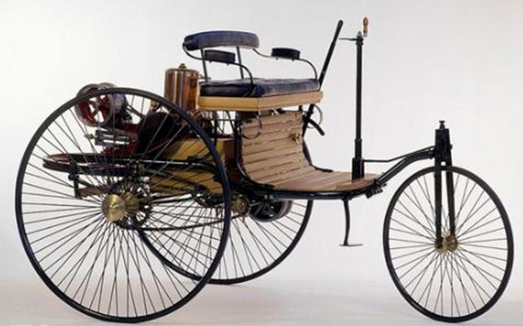
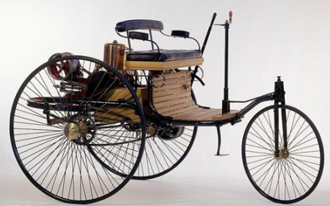
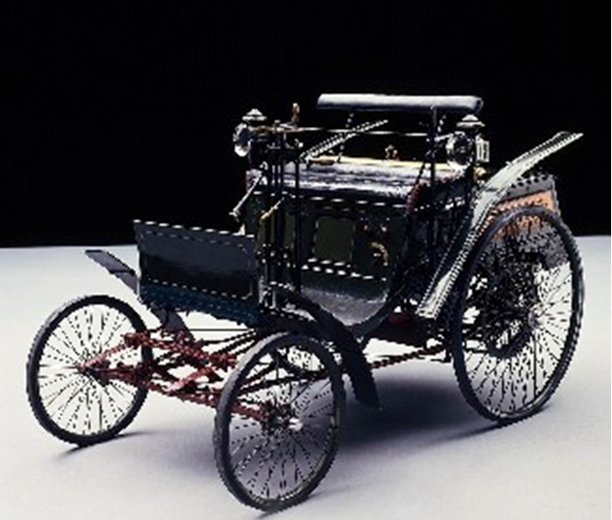
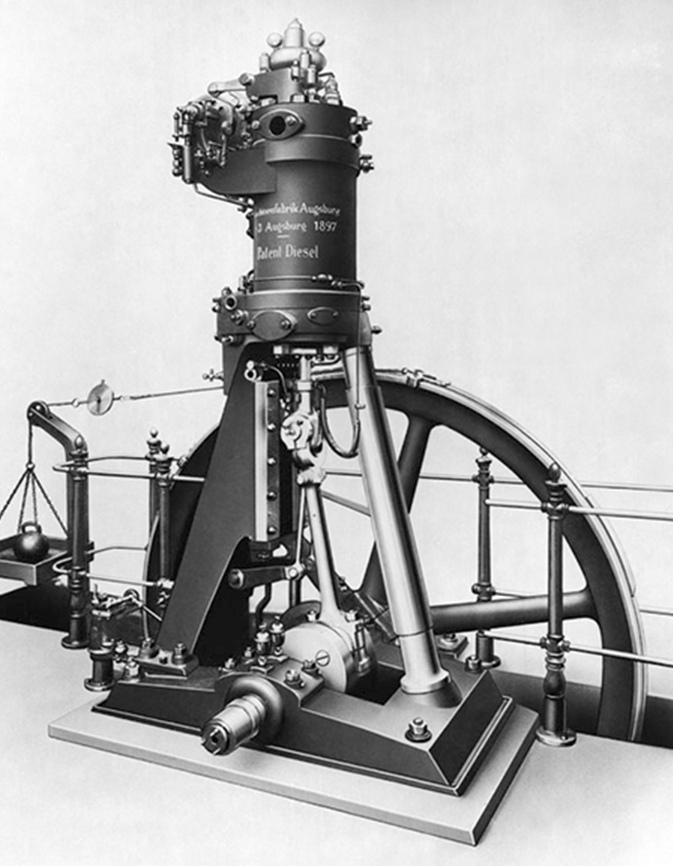
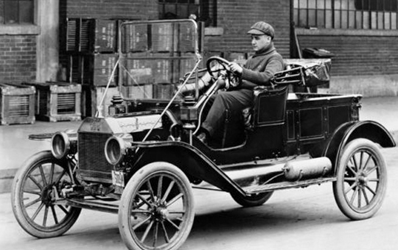
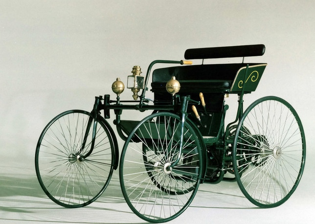
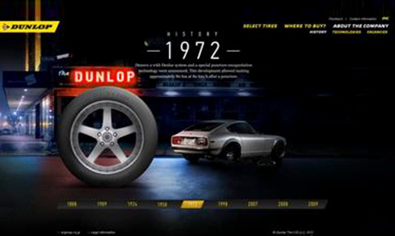
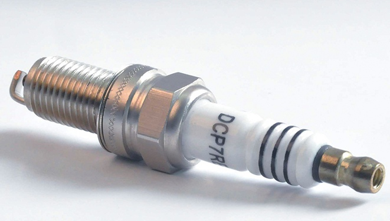
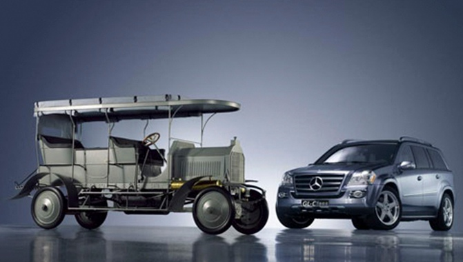

作为汽车发展史上的一个里程碑式的“艺术品”，SUV的发展逃不开那些历史技术的支持。因此，我们不妨先来聊一聊汽车发展史上你必须要知道的事情。
NO.1 世界上第一台车
不仅仅是奔驰，还是奔驰三轮汽油马车
汽车的发明者是谁？是卡尔•本茨，他在1886年创造出了汽车的雏形，虽然这台车仅有三个轮子……
编者按：纵观SUV的111年发展史中，总会有许多你不知道但我知道的事情，归根结底的算，100件事总得有吧？所以，从今天开始，一起聊聊关于SUV发展的历史。话题虽长，但我们一次聊10个，很快就能结束。再开聊前先请大家看一段很有意思的小视频。
作为汽车发展史上的一个里程碑式的“艺术品”，SUV的发展逃不开那些历史技术的支持。因此，我们不妨先来聊一聊汽车发展史上你必须要知道的事情。
不仅仅是奔驰，还是奔驰三轮汽油马车
汽车的发明者是谁？是卡尔•本茨，他在1886年创造出了汽车的雏形，虽然这台车仅有三个轮子……
出自大师之手，拥有四个轮子哦。
大家总会误以为世界上第一台车就是第一台现代汽车，但出自卡尔本茨之手的“世界首台”是个被定义为装载着汽油机的三轮马车。而第一台真正意义上的汽车，直到1901年，才被一个叫威廉•迈巴赫的人设计出来。这也是世界上第一台被公认为拥有四个轮子的现代汽车，并昭示着“马车时代”的结束。
一个和奔驰有关的牛X颠覆性创作。
第一台汽油机出现要明显早于第一台汽车的出现，1876年，德国发明家奥托运用罗沙的原理，创制成功第一台往复活塞式、单缸、卧式、3.2KW (4.4马力)的四冲程内燃机，但其仍以煤气为燃料，并采用火焰点火。 而世界上真正用于汽车的小型便携式内燃机则来自于戈特利布•戴姆勒。1883年，他与好威廉•迈巴赫合作，成功研制出使用小型便携式以汽油为燃料的内燃发动机，并配备电点火以及化油器技术。
一个只有两个档位的奇葩货色。
第一台变速箱并没有随着卡尔本茨大爷的世界第一台汽车孕育而生，而是出现在亨利福特大爷的福特T型车之上。T型车采用后轮驱动、行星齿轮传动且拥有3速变速器。以今天的标准来看，它还不能称为3速，因为其中有一个是倒档。
一个源自于屠宰场的汽车科技。

说来同样具有讽刺含义，福特T型车的革命性创举流水装配线是由威廉•C•克莱恩在参观芝加哥的一个屠宰厂动物肢解与传送带传送的过程后将其引进福特汽车公司的，个体工人重复切片的高效率工作引起了他的注意，而通过这套创新的工艺，福特T型车前前后后共生产了1500万台产品。而这一数字，直到几十年后才被大众甲壳虫所打破
一个关于手提油灯的屌丝逆袭史。
据说第一个汽车前大灯是家用手提灯。1898年，哥伦比亚号电动汽车把电用于前灯和尾灯，由此车灯正式诞生。
有了它的出现，人们终于不用像摇拖拉机一样去启动汽车了，蓄电池的广泛应用也昭示着汽车电启时代的来临。
1796年,意大利科学家沃尔兹发明了世界上第一台蓄电池，直到1859年，法国著名物理学家、发明家普兰特研发了世界上第一块铅酸蓄电池，从而使蓄电池开始为今后汽车的用电创造了条件。
怕颠坏儿子的屁股，因此他爸爸发明了又软又圆的充气式橡胶轮胎。
邓洛普•约翰•博伊德先生最早发明充气式橡胶轮胎时，是为改进他儿子自行车的行驶平顺性和操控性而研究的，但此举无疑是成功的，因为邓禄普先生的这项发明为日后汽车轮胎发展史奠定了十分坚实的基础。
伴随着点火技术的成熟，内燃机发展史因为火花塞的出现正式进入汽油机时代。
火花塞从发明至今已有一百多年的历史。最早的内燃机点火方式是德国威廉•贝尼特于1838年发明的火焰点火法。现代汽油发动机用的火花塞是法国路纳依于1860年发明的。他用普通陶瓷绝缘体和两个电极制成了世界上第一只火花塞，这便是现代火花塞的雏形。
不知道有没有现在捷达的越野能力强，但好在标志了民用四驱技术的降临。
众所周知，奔驰不仅是汽车发展的鼻祖，也是四驱车的第一个缔造者。在1907年一个偶然的机会，奔驰公司接到了一个制造能够满足恶劣路况需求的汽车订单，由于此前早有开发军用越野车和装甲车经验，设计师保罗•戴姆勒在此基础上开发了世界上第一辆四轮驱动的汽车——Dernburg Wagen，并装备全时四轮驱动以及四轮转向系统，而这也是四驱技术的雏形，以至于为日后的分时四驱技术奠定了良好的技术。
结语：百年SUV发展史，今天这一期就就此告一段落。在本期，我们先行介绍了一下SUV乃至汽车发展的必要因素，而在下期中，我们将着重介绍SUV以及越野车的发展历程。